Cut-flower Rose
Rosa × hybrida
A versatile focal bloom for gifting, celebrations and everyday arrangements.
Classic · Focal flower Photo: Elwana Blooms
Beautiful blooms for life's most meaningful moments.
Freshness, colour and natural elegance in every stem.
At Elwana Blooms Company Limited, flowers are more than a product. They are a way to express love, celebrate milestones and make everyday moments memorable.
This collection brings together familiar bouquet flowers, distinctive statement blooms and useful finishing stems. Each entry includes its botanical name, a flower-specific photograph and a source credit. It is a broad selection of flowers grown in Kenya, not an exhaustive list; varieties and availability differ by grower and season.
Our flowers are grown in Kenya and prepared for customers in local and international markets. The selection changes with season and availability, so please confirm details with our team before placing an order.
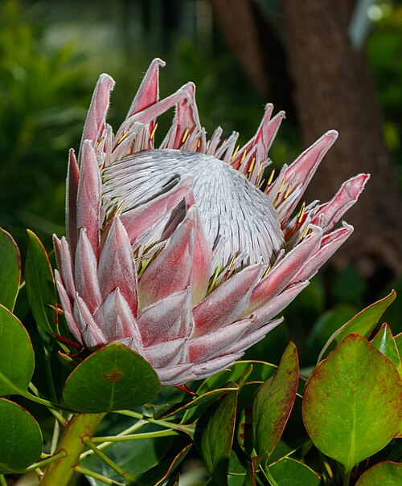
Recognisable favourites with distinctive shapes and colour.
Rosa × hybrida
A versatile focal bloom for gifting, celebrations and everyday arrangements.
Classic · Focal flower Photo: Elwana Blooms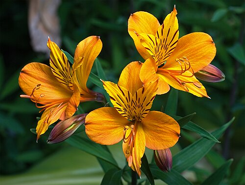
Alstroemeria aurantiaca
Patterned petals and branching stems bring colour and movement to mixed bouquets.
Patterned · Long-lasting Photo: JJ Harrison · CC BY-SA 3.0Gerbera × hybrida
Open, daisy-like flower heads make a bright, graphic focal point.
Bright · Focal flower Photo: Mister rf · CC BY-SA 4.0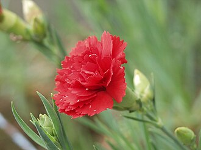
Dianthus caryophyllus
Ruffled petals and a broad colour range suit both bouquets and event work.
Ruffled · Versatile Photo: 草花写真館 · CC BY-SA 3.0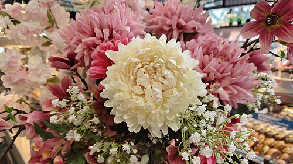
Chrysanthemum × morifolium
Full, layered blooms add shape and volume to seasonal designs.
Full · Textural Photo: Aliva Sahoo · CC BY-SA 4.0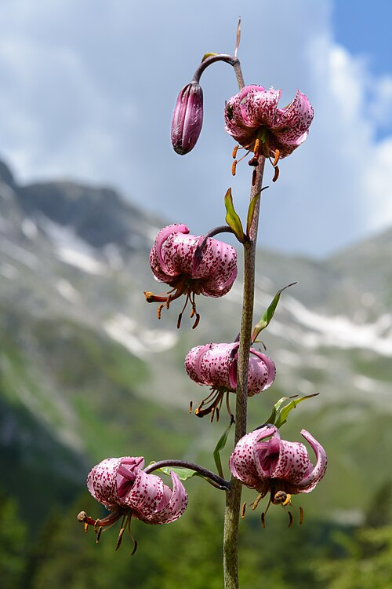
Lilium martagon
Distinctive recurved petals give this lily an elegant, architectural profile.
Sculptural · Refined Photo: Uoaei1 · CC BY-SA 4.0Standout flowers for considered designs and special occasions.
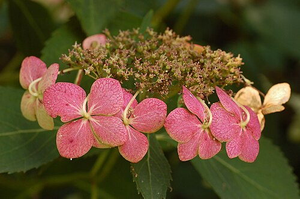
Hydrangea macrophylla
Rounded flower heads create a soft, generous shape in arrangements.
Lush · Romantic Photo: Derek Ramsey · GFDL 1.2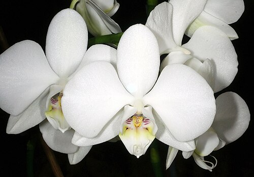
Phalaenopsis amabilis
Graceful arching stems and delicate blooms suit refined floral displays.
Elegant · Distinctive Photo: Orchi · CC BY-SA 3.0Protea cynaroides
A dramatic, sculptural flower that brings a bold natural focal point.
Sculptural · Statement Photo: H. Zell · CC BY-SA 3.0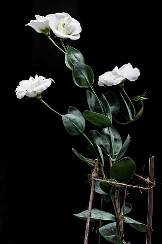
Eustoma grandiflorum
Soft, rose-like petals bring a graceful finish to bouquets and event work.
Soft · Romantic Photo: Wasir kasab · CC BY 4.0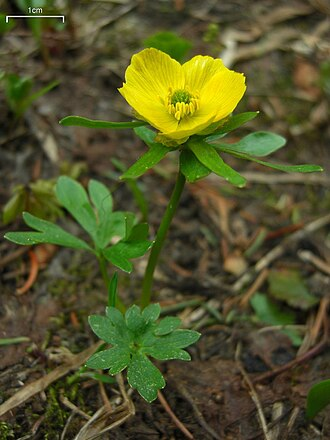
Ranunculus eschscholtzii
Layered petals create a delicate, full flower with a soft garden feel.
Layered · Garden style Photo: Jason Hollinger · CC BY 2.0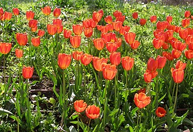
Tulipa gesneriana
Clean lines and smooth petals offer a modern, understated silhouette.
Modern · Seasonal Photo: Dina L · CC0A selection of cut flowers and greenery grown by Kenyan farms for local and export markets.
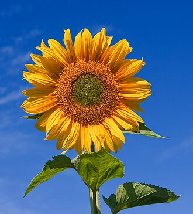
Helianthus annuus
A bold, sunny flower that brings an informal, cheerful note.
Bright · Seasonal Photo: Fir0002 · GFDL 1.2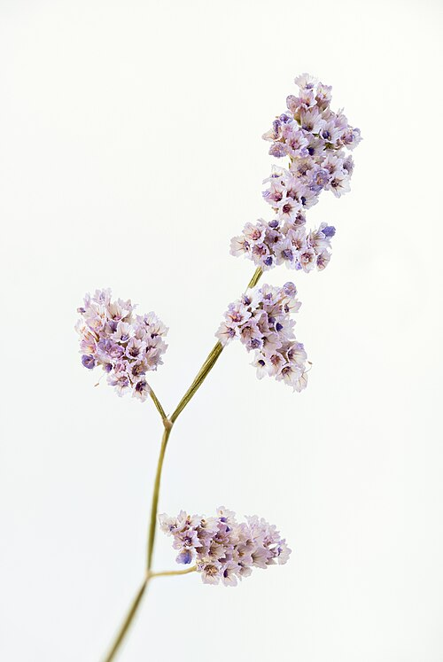
Limonium sinuatum
Fine clusters of papery flowers add light texture; this reference image is dried.
Textural · Filler Photo: Jules Verne Times Two · CC BY-SA 4.0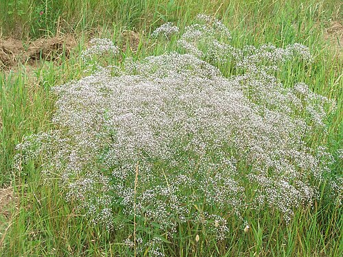
Gypsophila paniculata
Cloud-like branching sprays soften bouquets and add delicate detail.
Airy · Filler Photo: PiPi · Public domain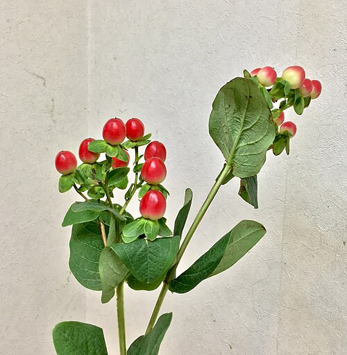
Hypericum
Glossy berries and foliage give mixed arrangements colour and natural texture.
Textural · Accent Photo: Nesnad · CC BY 4.0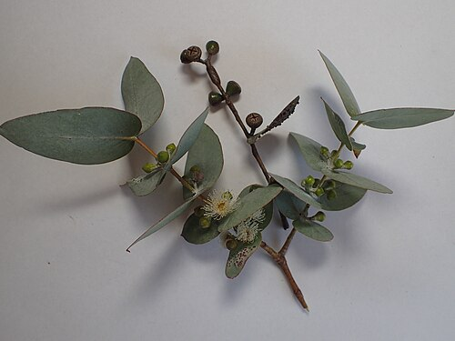
Eucalyptus cinerea
Rounded, silvery leaves provide a clean foliage accent and gentle movement.
Foliage · Fragrant Photo: Geoff Derrin · CC BY-SA 4.0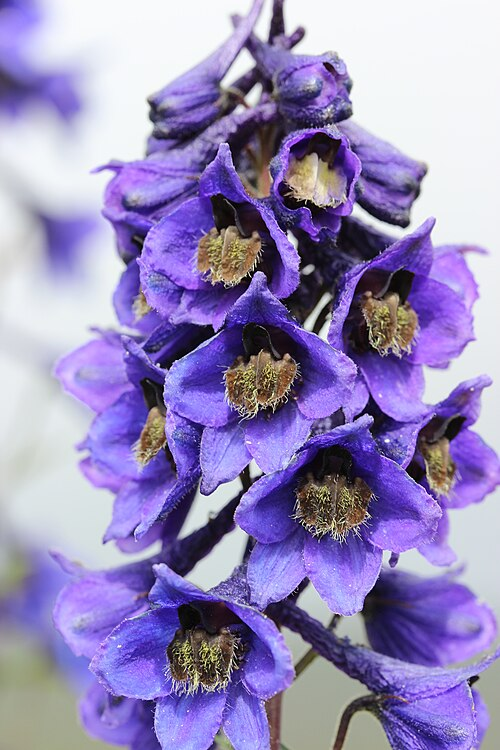
Delphinium elatum
Elegant vertical spires create height and drama in premium arrangements.
Tall · Premium Photo: Björn S. · CC BY-SA 3.0Upright stems and airy sprays for structure, colour and texture.
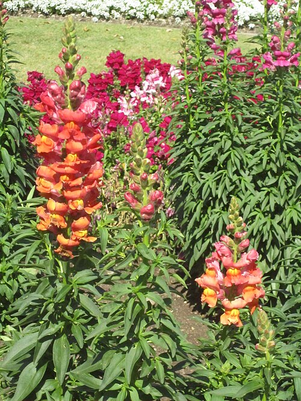
Antirrhinum majus
Spired blooms add texture, movement and strong vertical colour to floral work.
Vertical · Seasonal Photo: Craig Franklin · CC BY-SA 3.0 au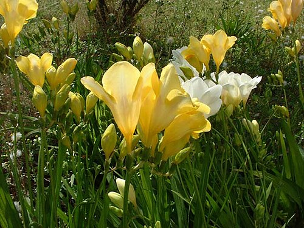
Freesia
Sweetly fragrant blooms with a fresh, clean look for bouquets and gifting.
Fragrant · Fresh Photo: Jeantosti · CC BY-SA 3.0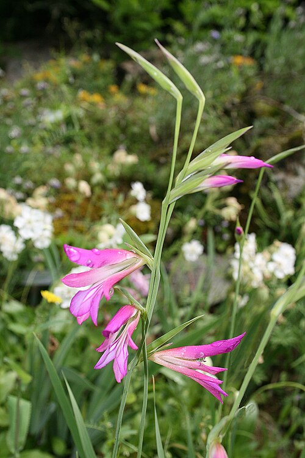
Gladiolus
Strong stems and open blooms create a dramatic line in larger arrangements.
Tall · Dramatic Photo: Jean-Pol GRANDMONT · CC BY-SA 3.0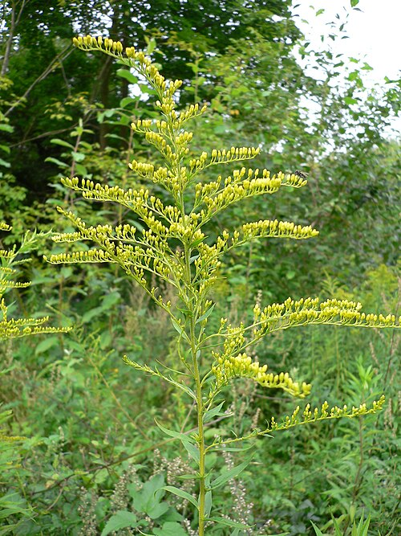
Solidago canadensis
Dense sprays of tiny yellow blooms add cheerful colour and texture.
Spray · Cheerful Photo: Georg Slickers · CC BY-SA 4.0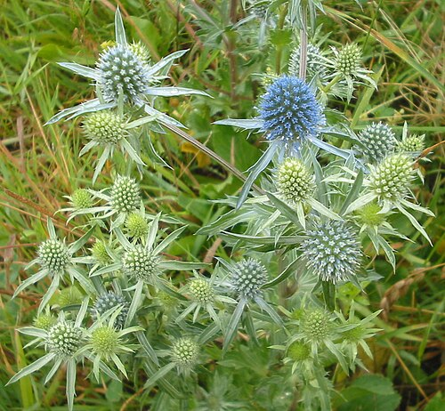
Eryngium planum
Textural, spiky blooms bring a sculptural note to wedding and event designs.
Textural · Sculptural Photo: Bogdan assumed · CC BY-SA 3.0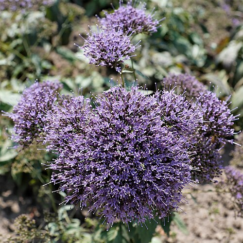
Trachelium caeruleum
Dense clusters of starry flowers give a soft cloud effect in arrangements.
Cloud-like · Soft Photo: C T Johansson · CC BY 3.0Supporting stems and greens that bring balance to mixed arrangements.
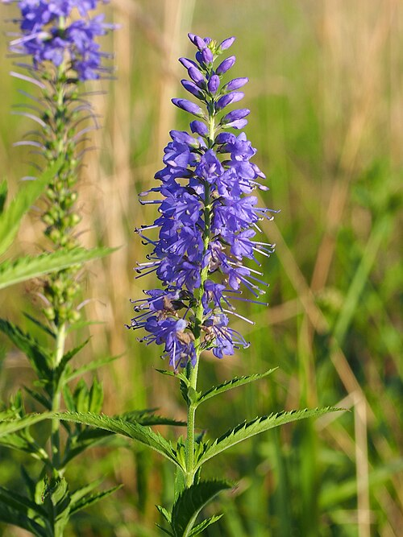
Veronica longifolia
A clean, upright filler flower that suits fresh and event-focused designs.
Upright · Filler Photo: Agnieszka Kwiecień, Nova · CC BY-SA 4.0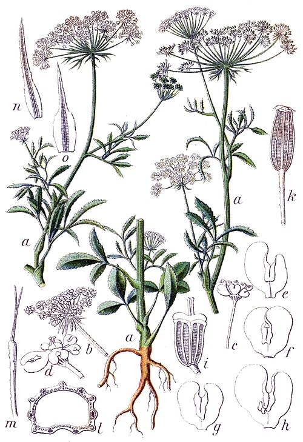
Ammi majus
Soft, airy flower umbels add lightness and volume to mixed-market bunches.
Airy · Fill Photo: Johann Georg Sturm · Public domain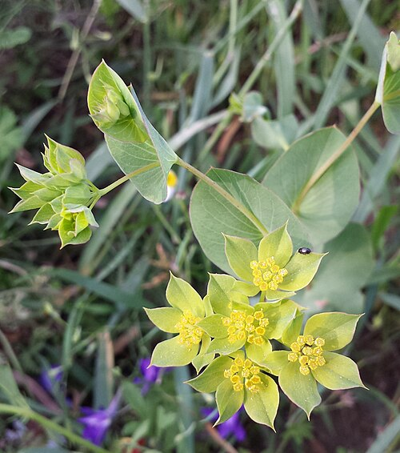
Bupleurum rotundifolium
Small rounded clusters create fresh texture and a natural garden feel.
Natural · Textural Photo: Stefan.lefnaer · CC BY-SA 3.0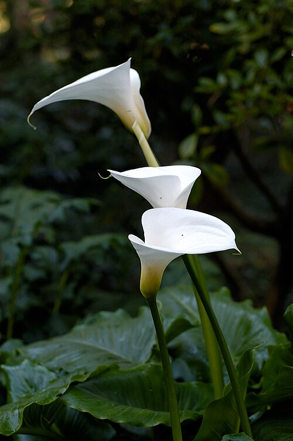
Zantedeschia aethiopica
Elegant funnel-shaped blooms give classic floral work a premium finish.
Classic · Premium Photo: Eric Hunt · CC BY-SA 2.5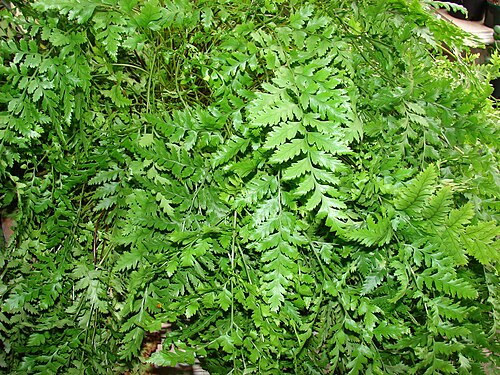
Rumohra adiantiformis
Robust green foliage for framing designs and adding fill to export orders.
Foliage · Durable Photo: Forest & Kim Starr · CC BY 3.0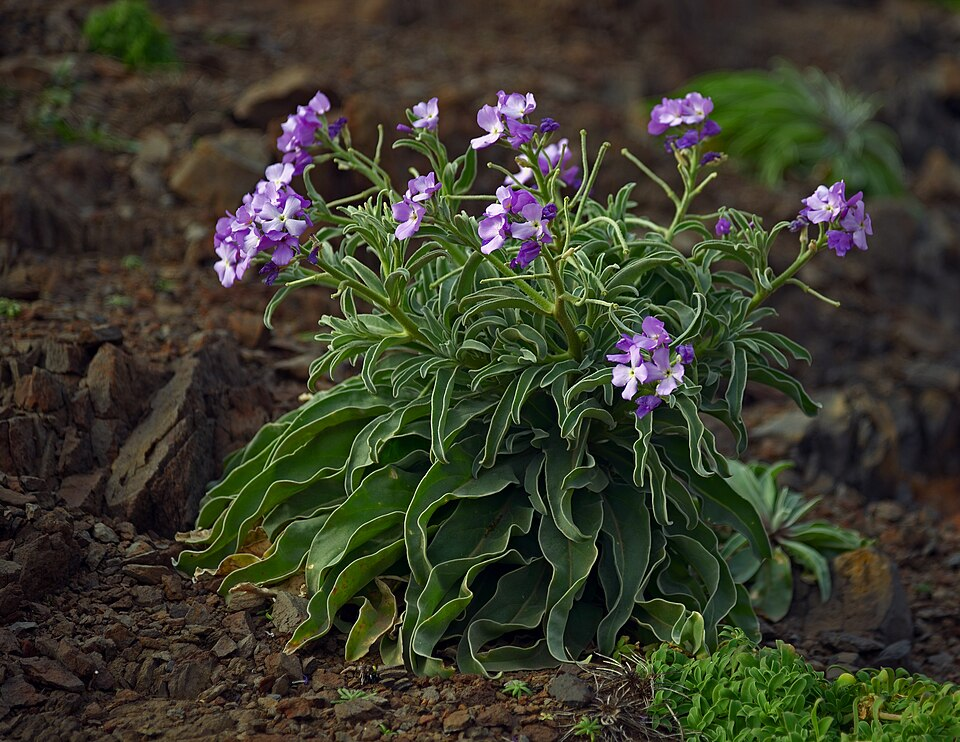
Matthiola incana
Fragrant clusters on upright stems bring soft colour and a classic garden feel.
Fragrant · Line flower Photo: Ввласенко · CC BY-SA 3.0Additional seasonal blooms to ask about when planning an order.
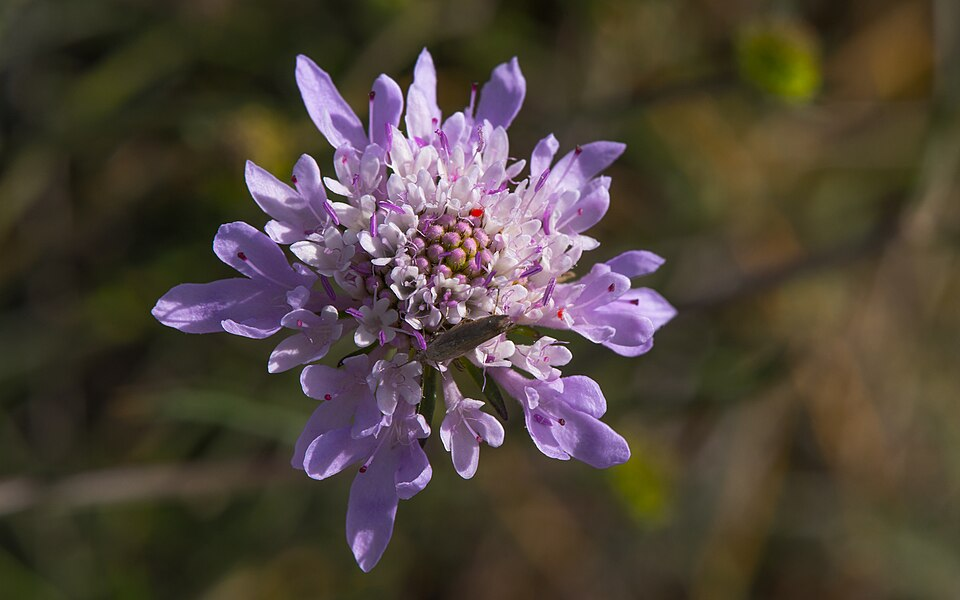
Scabiosa atropurpurea
Pin-cushion flower heads add a delicate, natural focal detail to bouquets.
Textural · Seasonal Photo: Christian Ferrer · CC BY-SA 4.0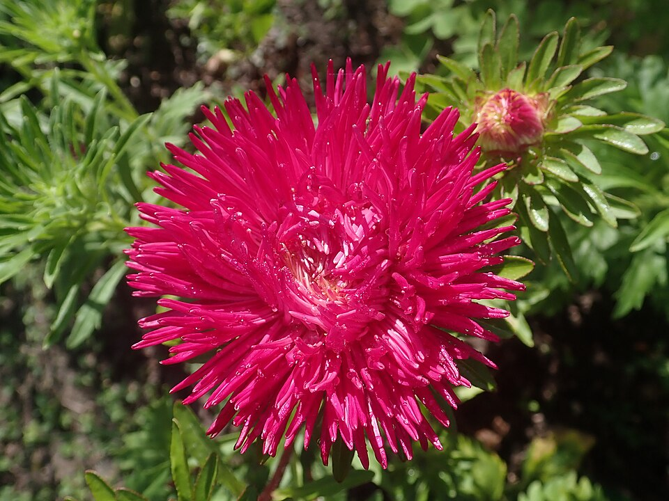
Callistephus chinensis
Full daisy-like blooms provide a colourful focal flower for mixed bunches.
Full · Seasonal Photo: Salicyna · CC BY-SA 4.0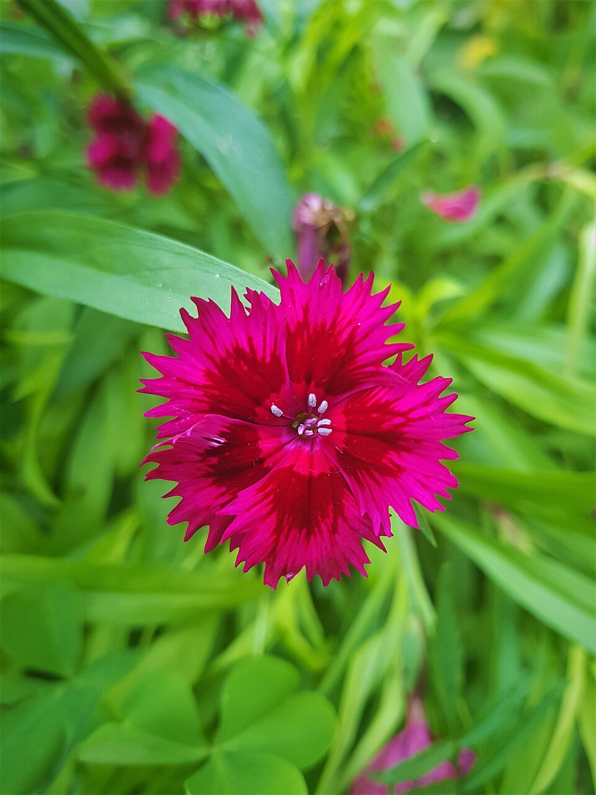
Dianthus barbatus
Compact clusters of fringed blooms add colour and a fine, ruffled texture.
Clustered · Textural Photo: Sabina Bajracharya · CC BY-SA 4.0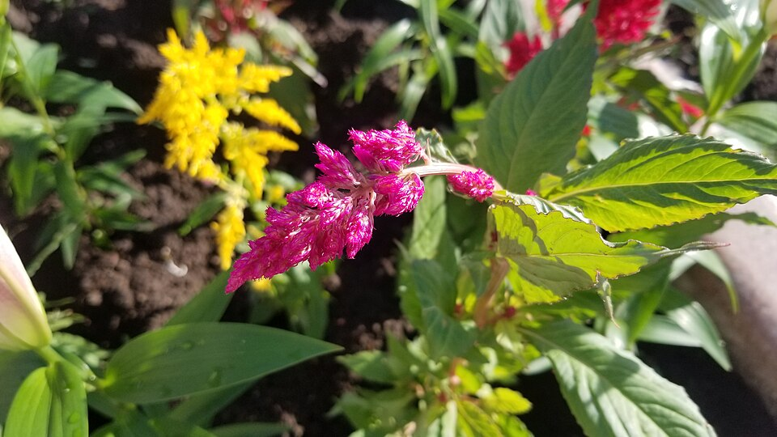
Celosia argentea
Distinctive, velvety plumes bring bold colour and sculptural texture.
Sculptural · Colourful Photo: Ts. Yesui · CC0Distinctive focal stems and fine-textured blooms for special designs.
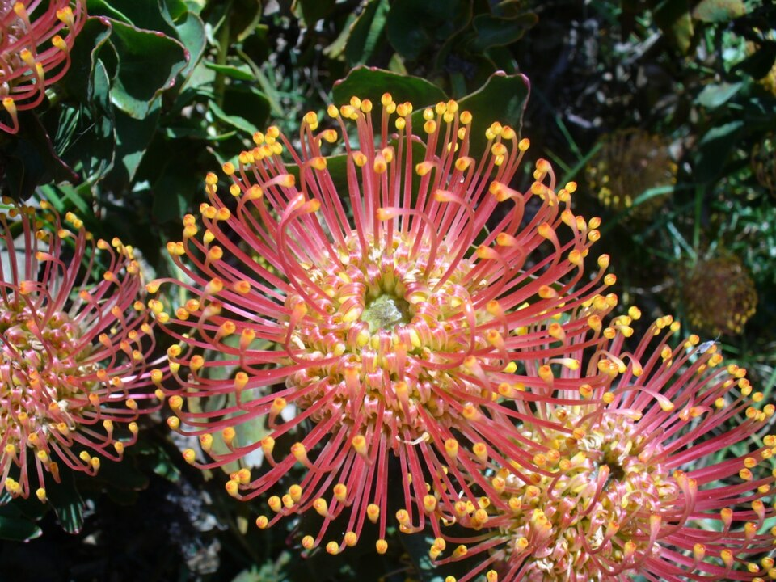
Leucospermum cordifolium
A distinctive rounded protea with fine, radiating styles and bold colour.
Statement · Textural Photo: Andrew Massyn · Public domain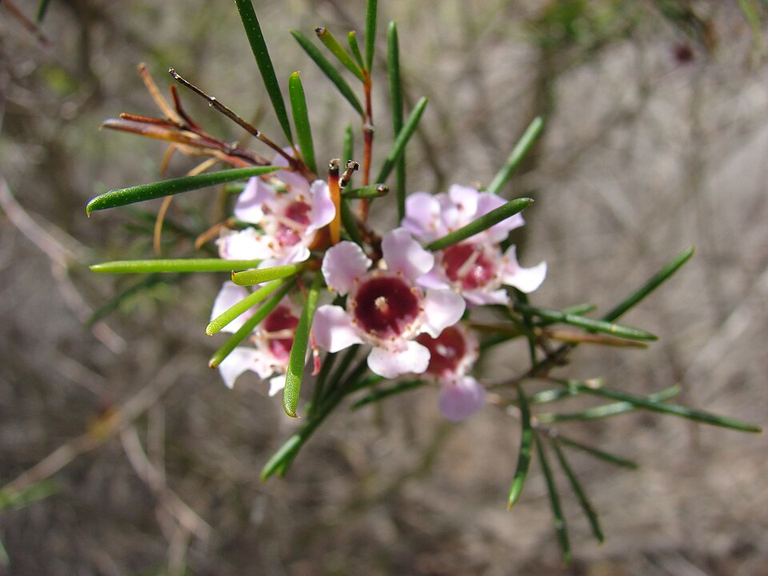
Chamelaucium uncinatum
Small waxy blooms and fine foliage create a light, long-lasting filler stem.
Filler · Delicate Photo: Forest & Kim Starr · CC BY 3.0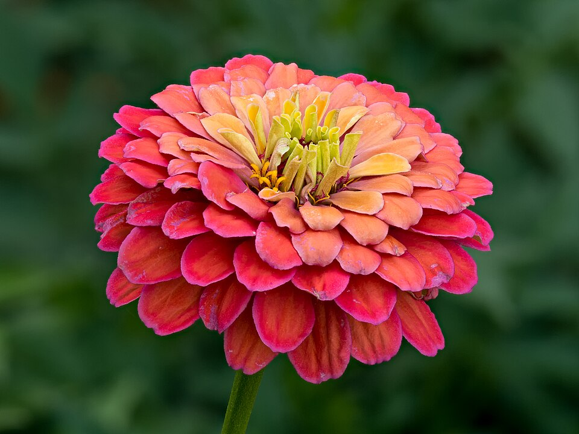
Zinnia elegans
Layered, vivid blooms make a cheerful accent for seasonal arrangements.
Colourful · Seasonal Photo: Ermell · CC BY-SA 4.0Share your preferred flowers, colours, stem lengths, quantities, pack format and delivery date. Our team can confirm current availability and provide a quote.
We would love to hear from you. Contact us for flower enquiries, availability and ordering details.
Ciata Mall, Runda
Nairobi, Kenya
Elwana Blooms Company Limited
Fresh flowers. Meaningful moments.
Thank you for exploring our catalogue. Contact Elwana Blooms to discuss your floral needs.